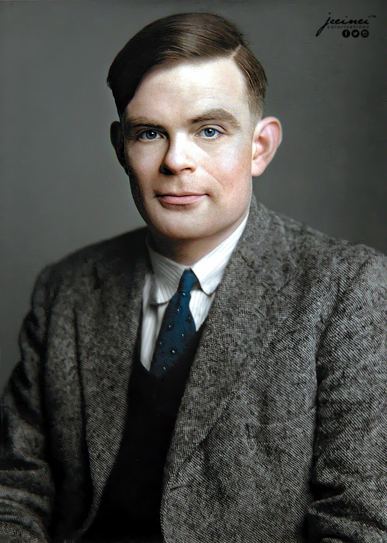

Sobre Alan Turing
Nome: Alan Mathison Turing
Nascimento:⭐ 23 de junho de 1912, Maida Vale, Londres, Reino Unido
Falecimento: ✝ 7 de junho de 1954, Wilmslow, Reino Unido
Nome: Alan Mathison Turing
Nascimento:⭐ 23 de junho de 1912, Maida Vale, Londres, Reino Unido
Falecimento: ✝ 7 de junho de 1954, Wilmslow, Reino Unido
Matemático, cientista da computação, lógico, criptoanalista, filósofo e biólogo teórico britânico. Considerado o pai da ciência computacional e da inteligência artificial, uma das mentes mais brilhantes do século passado, Alan Turing desenvolveu a base da computação moderna e ajudou os aliados a vencerem a 2ª Guerra Mundial desvendando o Enigma da inteligência nazista.